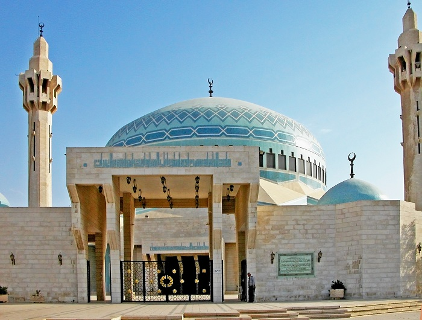
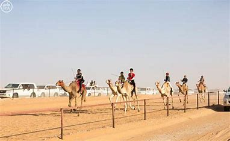
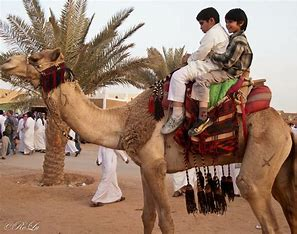
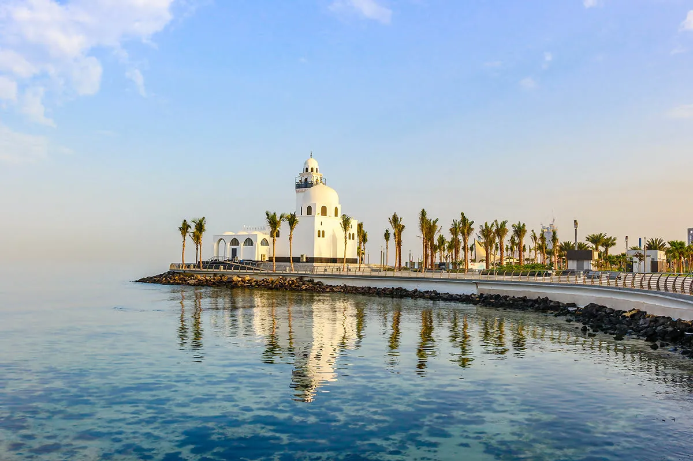

info@example.com
+012 345 6789


Your tour leader/driver will be awaiting you. They will be holding a sign of SaudiArabiaTours, You do not need to look for them – they will be waiting for you and will find you.
From the moment your tour starts, your tour leader will give you full attention. Once in the car, He will talk to you about all the things on the way as well as other aspects of your tour that will interest you. You will be transferred by an A/C car to your hotel. Overnight in Riyadh.
(Optional) Riyadh By Night Tour
Breakfast. Start your tour visiting the National Museum of Saudi Arabia which has been established in 1419 as a significant part of the king Abdulaziz historical center in Riyadh. Very impressive and important museum about the entire Saudi history, Saudi royal family, the kingdom formation, and everything regarding the political context. you will be led to numerous antiques, manuscripts, and documents that are all chronologically organized. It includes eight main halls: Hall of Man and the Universe, Arab Kingdoms, Pre-Islamic Era, Prophet’s Mission, First Saudi State, Unification of the Kingdom Hall & Hall of Hajj, and Two Holy Mosques.
The museum includes interesting examples of Arabian and Islamic art as well as architecture. The masterpieces include Prehistoric Elephant Skeleton, huge meteor found in the Empty Quarter in Saudi Arabia desert, Rock Grafitti from the Hejaz region backdate to pre Islamic era, Copy of rosetta stone, an example of Madaian Salah Rock-cut tombs
Then enjoy the National museum park walks through the outdoor gardens one of the best gardens you will visit in Saudi Arabia. King Abdulaziz’s historical park is an open area that you can enjoy with your family. Then proceed to the b>Hall of King Abdulaziz where there is a showroom of old cars that were used by the king.
Then we will move to the next visit to Murraba palace is among the most important palace built by King Abdulaziz. This Palace was to accommodate his family. It was built in the local traditional Najid style by using local building materials only. enjoy amazing photos here inside Murraba palace.
Highly recommended (Optional) Saudi Lunch at Najd traditional Saudi top restaurant. The restaurant offers a convenient place rich in history and heritage and rich in delicious traditional Saudi meals. An ideal choice to enjoy the most delicious Saudi cuisine in a distinctive atmosphere that reflects the heritage and life of the beautiful past, with sittings inspired by the ancient past of Saudis.
Then you will visit Riyadh’s Souk Al-Zal, a shopping trip through time. The market can trace its history back to 1901, to the beginning of modern Saudi Arabia. It sits within a stone’s throw of the Masmak fortress – the site where, in 1902, a young Ibn Saud and a small band of his most trusted soldiers crept up after dawn prayers, rushed the gate, captured the governor, and announced the return of the Al Saud family.
A treasure trove of traditional Eastern artifacts, the souk is one of the major tourist attractions in Riyadh. The word ‘zal’ means ‘carpet’ or ‘floor rug’, referring to the patterned textiles so central to Middle Eastern imagery.
Then visit the Al Masmak, Enjoy and step back in time and explore Saudi Arabia’s roots. Fascinating exhibitions on display show maps and photographs of Saudi Arabia, alongside a range of historical artifacts, artworks and audiovisual attractions. A short documentary also re-enacts the capture of the fortress by King Abdul Aziz, whose spearhead you can still see embedded in its wooden gate. Then you will visit Kingdom Tower or Mamlaka Tower the tallest building in the city which is located on the commercial strip in the Oalya district in Riyadh. This is the most famous tower in Riyadh. The shopping mall has lots of facilities and cafes to visit. Sky bridge Al Mamlaka at extra ticket a nice observation bridge where you can get magnificent panoramic view of the city. It has a number of restaurants and shops.
Then make a photo stop at The Imam Turki Bin Abdullah Mosque, which is a large local mosque, the architectural style is similar to that of Middle Eastern countries.
(Optional) Riyadh Food Tour
Overnight in Riyadh.
Breakfast. Start your tour with the Second Edge of the World is an exciting excursion from Riyadh. Drive Tuwaiq mountain, While standing on the cliffs, you’ll spot dried rivers weaving across the land, and see camels moving far below. These camels and their herders are following a well-trodden path, as an ancient caravan route once passed within its shadow.
 You can enjoy walking on old camel tracks which are always very fascinating.
(Optional) your tour leader can recommend for you a lovely restaurant to have your Lunch.
Travel in comfort back to your hotel.
Overnight in Riyadh
Breakfast, Drive to Ushaiqer heritage village will introduce you to the charming nature and ancient architecture of Saudi Arabia, While also giving you the opportunity to experience Saudi customs and traditions.
Hidden in the heart of the Najd, an oasis-dotted region 200 km northwest of Riyadh, Ushaiger Heritage Village provides a glimpse of a slow-paced Saudi society of old.
Bedouins first settled here 1,500 years ago and Ushaiqer quickly became a popular stopping point for pilgrims crossing to Makkah, thanks to its springs and low-brimmed olive and palm groves. Ushaiqer – which, in a naming quirk, means ‘little blonde’ to reflect the nearby red mountain that looms over the yellow mud houses – still has a small community of residents, making use of its schools, shops and mosques. To walk its narrow lanes is to enter a living museum, draped with traces of an ancient way of life.
Encased in thick walls, Ushaiqer is a labyrinth of winding alleyways, shaded pathways and timber-framed walkways, crossing between hundreds of mud houses. The village is divided into districts and bisected by groves of palm trees, and includes a cluster of beautifully renovated houses. These offer a stunning example of Najdi architecture, with its distinctive triangular windows and roofs, and ornately carved wooden doors. Some still bear the names of the families who lived there.
Overnight in Riaydh
Breakfast. Transfer to Riyadh airport to take your flight to Al Ula.
Start your tour visiting the Hegra, also known as Madain Saleh, or Al-Ḥijr is an archaeological site located in the area of AlUla within Al Madinah Region in the Hejaz, Saudi Arabia. A majority of the remains date from the Nabatean kingdom. The site constitutes the kingdom’s southernmost and largest settlement after Petra, its capital.
The Archaeological Site of Al-Hijr (Madain Saleh) is the first World Heritage property to be inscribed in Saudi Arabia. Formerly known as Hegra it is the largest conserved site of the civilization of the Nabataeans south of Petra in Jordan. It features well-preserved monumental tombs with decorated facades dating from the 1st century BC to the 1st century AD. The site also features some 50 inscriptions of the pre-Nabataean period and some cave drawings. Al-Hijr bears a unique testimony to Nabataean civilization. With its 111 monumental tombs, 94 of which are decorated, and water wells, the site is an outstanding example of the Nabataeans’ architectural accomplishment and hydraulic expertise.
Then we will move to the next visit to Hijaz Railway Station (some times it’s closed for renovation without advance notice) AlUla has long been a place of journey, travel, and exploration; Hijaz Railway station construction began in 1900, reaching Madinah in 1908 and opening in Damascus in 1913. As a result of World War I, the railway’s full 1,300 planned kilometers were never completed.
The site dates back to the Nabataean civilization and is spectacular. It is a Unesco World Heritage site the first in Saudi Arabia. its holds remain of Hijaz railway from Istanbul from Makkah- Madina that build by the Ottoman empire and destroyed in world war I.
Then enjoy Elephant Rock, This spectacular rock formation resembles an elephant with its trunk touching the ground, is one of AlUla’s geomorphological wonders became one of AlUla’s iconic landmarks.
Elephant Rock, also known as Jabal AlFil, is one of AlUla’s many geological marvels.
Note: sightseeing tours on Herga will be shared with a local tour guide and a small local group.
(Optional) HOT AIR BALLOON GLOW SHOW
In the calm of the desert night, balloons will glow like huge light bulbs or Chinese lanterns, giving a spectacular display for you.
Travel in comfort back to your hotel,
Overnight in Al Ula.
Breakfast, Pick you up from your hotel in Al Ula, Travel to Tabuk (275km)
Embark on a journey to discover the highlights of the Tabuk. Explore the magical natural wonder of Wadi Al Disah with its unique water streams and lush palms.
We will take you to Wadi Al Disah is a mountainous area located in the southwest Province of Tabuk (260 km). It is 4000 square meters away from Tabuk. Wadi Al Disahs elevation is 400 meters above sea level with temperatures ranging from 12°C to 31°C.
Wadi Al Disah is mainly located in the Prince Mohammed bin Salman Natural Reserve.
Wadi Al Disah is a beautiful mountainous valley in Saudi Arabia’s northwestern Tabuk province. Al Disah translates to “the valley of palm trees”, and when you arrive here you’ll see exactly why. The luscious valley floor is surrounded by massive sandstone cliffs and pillars that are perfect for exploration.
Wadi Al Disah is the perfect place to get away from other people and relax in nature. There are a lot of different things to do here like Hiking and joining groups of Saudis having picnics at the entrance of the valley to have a cup of tea while enjoying the serenity of the valley.
The Al Disah valley is characterized by mountain forms and tall rocky columns, providing a mountaineers paradise, as well as freshwater springs. The location includes several archaeological sites such as facades of Nabataean tombs, and the remains of walls containing Nabataean and Arabic writings in Kufic script.
Overnight in Tabuk
Breakfast. Transfer to Tabuk airport to take your flight to Jeddah.
Start your tour to visit Jeddah’s historical downtown area (Al-Balad) which is the historical area well known as the “Old Town”, where many of the oldest families used to live and work. It boasts of old buildings, a traditional souk and many restaurants, where visitors get to walk amid the old streets and experience the traditional landscape of the old town.
When you are in historical Jeddah we will take you back to the old era of Saudi Arabia, all your senses will be in action. You will hear and learn amazing stories about Jeddah and ride and walk through secret doors, Enjoy a wonderful walking Al-Balad.
This history tour of Old Town will take you along all the less known must-see local spots: Beit Nassif, Makkah gate for a photo stop, Historical Jeddah north gate stop for a photo, other historical houses provide a rare opportunity for you to experience the blend of traditional architecture with modernity Old Market hidden gems, Old Jeddah hidden galleries and Local Jeddah food shops only for locals no tourists know about it.
Then you will visit Al Shafi Mosque, The oldest mosque in Jeddah.

Then you will visit Al Tayebat International City Museum, It’s a maze of different rooms covering Saudi history, architecture, interior decoration, Islamic art from Saudi and other Islamic countries. The museum itself is a great place for photos.
Its four-floor collection has displays ranging from pre-Islamic artifacts, exquisite Islamic manuscripts, old coins and weaponry to stunning furniture, pottery and traditional Saudi dress. Replicas of home interiors from every region are also featured. Exhibits are accompanied by excellent information panels, as well as dioramas of the Kingdom’s provinces.
nd the tour by enjoying a ride along The New Jeddah Corniche is the 30 km coastal resort area of the city of Jeddah. Located along the Red Sea, the corniche features the coastal road, recreation areas, pavilions and large-scale civic sculptures for all to enjoy and take pictures.
Overnight in JeddahBreakfast. Free day, Overnight in Jeddah.
(Optional) Taif Tour From Jeddah
Taif has so much to see, feel, eat and buy so if you have time and want to add more to your itinerary – just let us know what you are interested in and we will arrange it for you at the cost price – no profit to us.
Breakfast. To enjoy the real taste of Saudi Arabia you have to try the original Saudi Arabian food Tour. Enjoy the best local food in Saudi Arabia which is one of life’s great pleasures, Discover off-the-beaten-path spots in the real Saudi Arabia that is not covered in any guidebook.
Finding the best place to eat in Saudi Arabia can be a challenge. Don’t worry we’ll take you to them, There are many delicious food tastings of the Best foods in Saudi Arabia.
Our food tours in Jeddah are the perfect tour for those who want to organize specialty food and beverage tours for all visitors to Saudi Arabia especially food lovers all over the world. You will be visiting also the traditional old food market to see how we as Saudis buy and choose our local food.
you won’t be only Enjoying eating the most popular and local Saudi dishes but also eating, sitting on our style, drinking our special drinks, and trying our local desserts. Book your tour with Saudi Arabia Tours so you can fully take advantage of our fabulous Jeddah Food Lovers Guide ensuring you taste the best foods we have in Saudi Arabia.
Enjoy Saudi Arabian food!
Overnight in Jeddah.
Breakfast. Free day.
(Optional) HELICOPTER TOUR

Take to the skies to experience the breathtaking views of stunning desert vistas and iconic landmarks such as Elephant Rock and the World UNESCO site, Hegra. View the world from a new angle and make memories that will last a lifetime.
Overnight in Al Ula.
Breakfast. Transfer to Jeddah to take your flight to Abha. Start your tour by visiting the Jabal Sawda is the highest point in Saudi Arabia. You will visit to see the climate and enjoy the mountains and the heights. It is 3000 meters above sea level. You will see lots of varieties of green lush trees and shrubs. Also the misty mountains and valleys will soothe you and make you relaxed. Wonderful mental relaxation. It can get really cold so make sure to have jackets and blankets.
A cable car with an extra ticket, A beautiful trip with a rainy atmosphere will be a more exciting trip that falls from the mountains. Riding the cable car & viewing Abha from above was such a wonderful experience. It takes about 20-25min to reach downhill and a similar time to return back on top. Each car can seat approximately 8 adults comfortably. Then you will visit El Sahab Park is above a mountain. It has a beautiful view and the clouds pass you all the time. The literal translation of ‘Sahab’ is ‘cloud’. And that’s what this place is. You will have a chance to walk into clouds Cornish.
(Optional) your tour leader can recommend for you lovely restaurant in El Sahab Park to have your Lunch. you will be in between the clouds, one of the most beautiful places.the place is above a mountain.
There are two top view points on this hill. They are very near to each other. Lot of monkeys there, better to take some food for them, the moment you get there, they expect you to give them food.
Then we will take you to Rijal Almaa village which is famous for its typical Arabian traditional architecture that can be found throughout the whole country, each region having its own specificity. But when it comes to Saudi traditional architecture the first image that comes to mind is the charming and colorful houses of Rijal Alma’. It is located 130 km by safe road from Abha or 65 Km unsafe road so of course we will take you by the safe road.

The village have stunning sceneries with great history of the region. For its exceptional features, Rijal Alma’ is today on the tentative list of UNESCO World Heritage. You will find there a place redolent with history and tradition and clearly oriented to tourism. It’s a paradise for photographers and photos lovers and our tour leader will take you to the best panoramic spots for photos. You will visit the village museum its a huge museum all inside the village with a lot of old pieces and there is a description as well in English and in Arabic. It’s established by the efforts of the local inhabitants in order to save their regional heritage, and they have turned one of the forts into the museum headquarters since 1985.The village consists of about 60 palaces built from natural stone, clay and wood, and the palaces consist of several floors. There are so many places to take photos. The village used to be a natural passage that linked Yemen, Makkah, Madinah and Levant. Thus, it was a regional trade centre. The village has a historical significance as it has a number of long and old fortresses.
Recently, a rehabilitation project has been undertaken by The Saudi Commission for Tourism and Antiquities in collaboration with the private sector. Moreover, a museum was established by the local people in one of the village’s forts in 1985.
Transfer to Abha airport to take your flight to Jeddah, Arrival and drive to your hotel.
Overnight in Jeddah.
Breakfast, Drive to the northwestern city of Tabuk has long been a resting point for Jordanian and Egyptian pilgrims, with a rich Bedouin culture that can be felt in Souq Twaheen, which still supplies patterned rugs and goat-hair tent covers for modern nomads. Today’s Tabuk marks the start of the Saudi coast but is also a base for exploring wild beauty spots and the story of the Prophet Moses, who lived east of the city for a decade. It’s possible to visit the carved tombs of Maghaer Shuaib in the desert, or the Moses Spring near Magna, where natural springs still flow under the date palms. Nearby is the stunning Tayeb Al Ism, a steep granite massif separated from the turquoise-fringed Gulf of Aqaba by only the road. For clear seas and sun-swept beaches, explore the charms of local coastal towns Haql and Sharma.
Start your tour visiting the Al-Zeeta Mountains, Arrive and enjoy a sand adventure & looking at the mountains.
Then enjoy the town of Al Bad’ to visit “Magha’er Shuaib”.The Maghaer Shuaib seems to appear from nowhere in the reddish desert west of Tabuk — its elegantly carved facades and tombs built into the sandstone rocks recalling Petra in Jordan and Hegra at Al Ula. Having fled Egypt, Moses lived here a decade under the patronage of the Prophet Shuaib, who had been impressed by Moses’ chivalry and offered his daughter’s hand in marriage. Moses eventually returned to Egypt, but it’s easy to imagine that this beautiful place stayed with him.
Then we will move to the next visit to the town of Magna and visit to the 12 Springs of Prophet Moses.
Then you will visit the Wadi Tayyib Al Ism and enjoy the majestic mountain views.
Then visit Ras Alsheikh Hamid to visit the Catalina Seaplane Wreckage.
Transfer to Tabuk airport to take your flight to Jeddah.
Overnight in Jeddah
Breakfast. Start your tour by visiting the Jabal Sawda is the highest point in Saudi Arabia. You will visit to see the climate and enjoy the mountains and the heights.It is 3000 meters above sea level. You will see lots of varieties of green lush tress and shrubs.Also the misty mountains and valleys will sooth you and make you relaxed. Wonderful mental relaxation. It can get really cold so make sure to have jackets and blankets.
A cable car at extra ticket, A beautiful trip with a rainy atmosphere will be more exciting trip falls from the mountains. Riding the cable car & viewing Abha from above was such a wonderful experience. It takes about 20-25min to reach down hill and similar time to return back on top. Each car can seat approximately 8 adults comfortably. Then you will visit El Sahab Park is above a mountain. It has a beautiful view and the clouds pass you all the time. The literal translation of ‘Sahab’ is ‘cloud’. And that’s what this place is. You will have a chance to walk into clouds Cornish.

(Optional) your tour leader can recommend for you lovely restaurant in El Sahab Park to have your Lunch. you will be in between the clouds, one of the most beautiful places.the place is above a mountain.
There are two top view points on this hill. They are very near to each other. Lot of monkeys there, better to take some food for them, the moment you get there, they expect you to give them food.
Then we will take you to Rijal Almaa village which is famous for its typical Arabian traditional architecture that can be found throughout the whole country, each region having its own specificity. But when it comes to Saudi traditional architecture the first image that comes to mind is the charming and colorful houses of Rijal Alma’. It is located 130 km by safe road from Abha or 65 Km unsafe road so of course we will take you by the safe road.
The village have stunning sceneries with great history of the region. For its exceptional features, Rijal Alma’ is today on the tentative list of UNESCO World Heritage. You will find there a place redolent with history and tradition and clearly oriented to tourism. It’s a paradise for photographers and photos lovers and our tour leader will take you to the best panoramic spots for photos. You will visit the village museum its a huge museum all inside the village with a lot of old pieces and there is a description as well in English and in Arabic. It’s established by the efforts of the local inhabitants in order to save their regional heritage, and they have turned one of the forts into the museum headquarters since 1985.The village consists of about 60 palaces built from natural stone, clay and wood, and the palaces consist of several floors. There are so many places to take photos. The village used to be a natural passage that linked Yemen, Makkah, Madinah and Levant. Thus, it was a regional trade centre. The village has a historical significance as it has a number of long and old fortresses.
Recently, a rehabilitation project has been undertaken by The Saudi Commission for Tourism and Antiquities in collaboration with the private sector. Moreover, a museum was established by the local people in one of the village’s forts in 1985.
Transfer to Abha airport to take your flight to Jeddah, Arrival and drive to your hotel.
Overnight in Jeddah.
Transfer you to the airport and assist you at the airport through final departure formalities.
Important Note :
The itinerary is tentative and subjected to change without prior notice. Final Itinerary will be handed over on the day of arrival.
We accept all methods of secure payment: Visa, MasterCard, PayPal, direct bank transfer.
Kindly note that the hotel rating in Saudi is not the same as in USA or Europe, so Luxury or Ultimate Luxury hotel options are always recommended.
Accommodation Plan (A) 5 stars:
Riyadh: (Shaza Riyadh // Rosh Rayhaan by Rotana // Four Points By Sheraton Riyadh Khaldia)
Jeddah: (Prime Hotel – Jeddah, Al Hamra // Radisson Blu Hotel, Jeddah Al Salam // Sheraton Jeddah Hotel // Mövenpick Hotel Tahlia Jeddah )
| 3 Star | 4 Star | 5 Star | |
|---|---|---|---|
| Price per person in DBL or TRPL Room | 5850$ | 6350$ | 7350$ |
| Solo traveler | 9360$ | 10160$ | 11760$ |
| Christmas & Easter – DBL or TRPL Room | 7020 | 7620$ | 8820$ |
| Christmas & Easter – Solo traveler | 11235$ | 12195$ | 14115$ |
Accommodation Plan (B) Luxury:
Riyadh: (Hyatt Regency Riyadh Olaya // Hilton Riyadh Hotel & Residences)
Jeddah: (Jeddah Hilton // Elaf Jeddah Hotel – Red Sea Mall )
| All year Round | Christmas & Easter | |
|---|---|---|
| price per person in dbl room | 10150$ | 12180$ |
| Solo traveler | 16240$ | 19490$ |
Accommodation Plan (C) Ultimate Luxury:
Riyadh: (Al Faisaliah Hotel // Burj Rafal Hotel Riyadh // Marriott Riyadh Diplomatic Quarter // Narcissus Hotel and SPA Riyadh )
Jeddah: (Park Hyatt Jeddah – Marina, Club and Spa // Rosewood Jeddah )
| All year Round | Christmas & Easter | |
|---|---|---|
| price per person in dbl room | 11550$ | 13860$ |
| Solo traveler | 18480$ | 22175$ |
Secure your trip and give yourself greater peace of mind with the Travel Insurance program proposed by AIG for you. For more info visit www.aig.com One week 50$ per person More than one week 75 $ per person.
If you plan to get a Saudi sim card we would advise you to get it at the airport when you arrive. as it will be much easier to buy it from the airport other than anywhere else as they request more documents if you decide to buy it later from anywhere else.
We don’t only choose qualified and professional Tour leader/ Drivers but also choose those who are friendly, with a sense of humor who are committed to offering a superior level of service so you can enjoy your time with them.
Both men and women are asked to dress modestly in public, avoiding tight-fitting clothing. Women should cover shoulders and knees in public.
You should keep your passport with you during any tour you will be making in Saudi Arabia. don’t leave it in your hotel room as some times they request to see your passport or visa.


© roamarabia.com. All Rights Reserved.
Designed by MAQ Solution